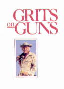
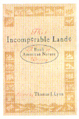
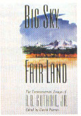

Of birdhouses, bullets and just plain beautiful American prose
A one-book tour through the best American nature writing
Somewhere along the way, we lost the capacity to design perfect natural houses-all we can do now is hire architects and hope for the best. The sad part is that we then try to impose our artificially upon other creatures.
Grits Gresham knowns guns and knows how to write about them!
THESE THOUGHTS ARE EXPANDED in the introductory pages of Malcolm Wells's Classic Architectural Birdhouses and Feeders ($9.95 postpaid from Malcolm Wells, P.O. Box 1149, Brewster, MA 02631; Massachusetts residents add 5% sales tax). The author, of course, is best known for his works on earth-sheltered housing and is universally recognized as an accomplished advocate of underground design.
His latest effort is a presentation of more than 20 bird-accommodating habitats designed to meet two most important criteria-respect for the environment and for the needs of the creatures themselves. Hence, we're encouraged to forage for any and all indigenous materials: "You shouldn't have to pay for anything but the nails; if the birds can scrounge [everything] they need, surely we can manage to round up a few pieces of scrap wood. . . . Should the nails come in a plastic pack, dump its contents onto the store counter and ask for an organic paper bag."
Not surprisingly, the structures that Wells has chosen to detail from his own 40-year collection-in line drawings, with dimensions, exploded views and plan layouts-are nothing like the "silly-looking bird boxes, embarrassing us out-of-doors," to which we've acquiesced over time. They're clever, inconspicuous and a well-thought-out blend of aesthetics and a consciousness of species engineering. And besides, how many opportunities do you get to commission an architect to design your birdhouses?- RF
Grits Gresham is probably the best-known outdoor writer in America. Even if you've never picked up a copy of Sports Afield (where he's served as shooting editor for 14 years), odds are you've encountered his writing in one of the many other publications, some decidedly not "outdoor" oriented, that have been pleased to feature it. Or, perhaps, you might have seen him on ABC's "The American Sportsman," which Grits hosted for 13 years. And, barring all that, you've almost certainly seen him, Western-hatted and gray sideburns bristling, in one of the Miller Lite beer commercials.
But if you've only seen Grits, you're missing out, because he produces some of the most authoritative and gracefully written how-to copy on hunting and fishing topics being written today. Grits on Guns is a compilation of the author's best columns from past issues of Sports Afield. In almost 40 articles, and some 331 pages, Gresham presents a mixed bag of information and entertainment on every aspect of the shooting sports, from the run-amuck urge to sue that infests America today (and results in more expensive, and less capable, firearms for the rest of us) to choosing a first firearm for deer or dove, and a whole lot more.
Whether you're a long-time shooter or a nimrod-to-be, you'll find a full load of both pleasure and education in Grits on Guns ($27 postpaid from Cane River Publishing, P.O. Box 4095, Prescott, AZ 86302).- BW
"Survival Hint #1: Stay out of there...The Great American Desert is an awful place."-Ed Abbey
Subtitled "A Book of American Nature Writing," This Incomperable Lande embraces the genre, from the work of William Wood (who "flourished" from 1629 to 1635), which contains such memorable passages as, "If I should tell you that some have killed a hundred geese in a week... it may be counted impossible though nothing more certain," to John Hay's (1915-) thoughtful environmental essay, "Custodians of Space." In his introduction, editor Thomas J. Lyon argues convincingly for a reevaluation of the position of nature writing in American literature. The wonderful assortment of essays chosen for his book argues more convincingly still.
The book should be available soon after you receive this issue of MOTHER and can be ordered for $29.95, plus shipping and handling, by calling Houghton Mifflin Company toll-free at 800/225-3362.- BW
"Unchecked, the planet will run out of what we have taken for granted."
A.B. Guthrie, Jr., is best known for his popular series of novels-starting with The Big Sky and continuing through The Last Valley -which describe the subjugation of the West during the last century and the beginning of this one. In Big Sky, Fair Land (available from Northland Press, P.O. Box N, Flagstaff, AZ 86002 for $19.95 hardbound or $13.95 softcover, postpaid), editor (and MOTHER'S Western editor) David Petersen traces an undercurrent of environmentalism through Guthrie's work and then presents 23 of the Montanan's environmental essays-writings that secure title for Guthrie as one of the most eloquent spokespersons of the conservation ethic.
Petersen's third of the book will fascinate fans and students of A.B. Guthrie, Jr.'s fiction, and the essays in the last two-thirds are sure to send anyone new to his prose to the bookstore for copies of his novels.
If Guthrie sometimes looks back with longing, he looks forward with penetrating worry, as in these comments from the essay "Retreat Into Limbo":
"Plenty more where that came from, we say. And if there's not plenty, we'll find a substitute.
"But both the originals and their substitutes make harsh demands on the planet. Unchecked, the planet will run out of what we have taken for granted. And then it will run out of us."- DS
|
 |
 |
 |